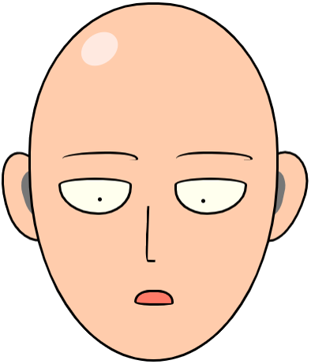

---

permalink: /404.html

---
<!DOCTYPE html>
<html>
	<head>
		<meta charset="utf-8">
		<title>404 Not Found</title>
		<link rel="icon" href="images/uncle.jpg">
		<style>
				body,html{margin:0; padding:0;background-color: #f1f1f1}
				.bannerWrap{ position:relative; margin:0 auto;width:100%; height:350px; background-color:#ecd6a7; overflow:hidden;}
				.bannerWrap img{ display:block; position:absolute;}
		</style>
	</head>
	<body>
		<div style="width: 100%;height:100px;background-color: #67b7e2"></div>
		<div class="bannerWrap" id="bannerWrap">
			
			
			
			
		</div><!--bannerWrap结束-->
		<div style="text-align: center;margin-top:100px">
			<input type="text" class="search-input" placeholder="回车搜索" style="width: 300px;height: 42px;padding-left: 15px;border-radius: 42px;border: 1px solid rgba(127,140,141,0.6);background: white;outline: none;">
			<br><br><br>
			<a href="./" style="color: #666666;font-weight: 200;font-size: 20px;text-decoration: none;">回到首页</a>
		</div>

		<script src = "js/jquery.min.js"></script>
		<script type="text/javascript">
		$('.search-input').bind('keypress', function (event) { 
			if (event.keyCode == "13" && $('.search-input').val() != "") {
				window.location.href = 'issue_per_label.html?q='+$('.search-input').val();
			}
		})

		$(function(){
			var win_w, win_h,b_w, b_h,
			small_house, house, fish, info, pToW_w, pToW_h, $img,
			temp_p_l, temp_p_t;
			
			
			var $banner = $("#bannerWrap");
			var picArray = "small_house,house,fish,info".split(",");
			small_house = { l: 200, t: -140, s: 0.09, isFront: false },  //smallhouse的参数
			house = { l: 70, t: -130, s: 0.05, isFront: false },  //house的参数
			fish = { l: -100, t: -90, s: 0.02, isFront: true },  //fish的参数
			info = { l: -410, t: -110, s: 0.03, isFront: true };  //info的参数
			
			var resetImg = function(){ 
				b_w = $banner.width();      //初始化获取banner宽度
				b_h = $banner.height();     //初始化获取banner高度
				win_w = $(window).width();     //初始化获取屏幕宽度
				win_h = $(window).height();     //初始化获取屏幕高度
				pToW_w = $banner.width()/win_w;     //初始化获取banner宽度和屏幕宽度的比例
				pToW_h = $banner.height()/win_h;     //初始化获取banner高度和屏幕高度的比例
			

				$.each( picArray, function(i ,id){      //初始化各图片的位置（相当于鼠标移到屏幕中间时图片的位置）
						$img = $("#"+ id);
					temp_p_l = pToW_w * eval(id+".s") * win_w/2 ;     //这里使用win_w/2是为了模拟鼠标移到屏幕水平中点的效果
					temp_p_t = pToW_h * eval(id+".s") * win_h/2 ;     //这里使用win_h/2是为了模拟鼠标移到屏幕垂直中点的效果
					if(eval(id +".isFront")){
						$img.css({"left": b_w/2 + eval(id +".l") + temp_p_l , "top": b_h/2 + eval(id +".t") + temp_p_t }); 
					}else{
						$img.css({"left": b_w/2 + eval(id +".l") - temp_p_l , "top": b_h/2 + eval(id +".t") - temp_p_t }); 
					}
				})
			}
			
			resetImg();
			$(window).on("resize",resetImg);      //屏幕缩放时重新初始化数据
			
			var changePst = function( pageX, pageY ){
				$.each( picArray, function(i ,id){   
					$img = $("#"+ id);
					temp_p_l = pToW_w *  eval(id +".s") * pageX ; 
					temp_p_t = pToW_h *  eval(id +".s") * pageY ; 
					if(eval(id +".isFront")){
						$img.css({"left": b_w/2 + eval(id +".l") + temp_p_l , "top": b_h/2 + eval(id +".t") + temp_p_t });
					}else{
						$img.css({"left": b_w/2 + eval(id +".l") - temp_p_l , "top": b_h/2 + eval(id +".t") - temp_p_t });
					}
				})
			}
			

			$("body,html").mousemove(function(e){
				changePst(e.pageX, e.pageY);
			})

		})
		</script>
	</body>
</html>